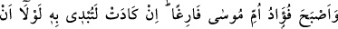
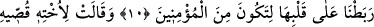
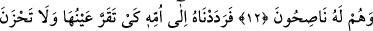
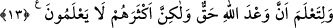
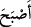
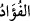
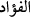
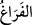

SÜT ANALARINI EMMESİNE
MÜSAADE ETMEDİK
10. Mûsâ’nın anasının yüreğinde yalnızca çocuğunun tasası kaldı. Eğer biz,
(vaadimize) inananlardan olması için onun kalbini pekiştirmemiş olsaydık,
neredeyse işi meydana çıkaracaktı.
11. Annesi Mûsâ’nın ablasına: Onun izini takip et, dedi. O da, onlar farkına
varmadan uzaktan kardeşini gözetledi.
12. Biz daha önceden (annesine geri verilinceye kadar) onun süt analarını
kabulüne (emmesine) müsaade etmedik. Bunun üzerine ablası: Size, onun bakımını
namınıza üstlenecek, hem de ona iyi davranacak bir âile göstereyim mi? dedi.
13. Böylelikle biz onu, anasına, gözü aydın olsun, gam çekmesin ve Allâh’ın
vâdinin gerçek olduğunu bilsin diye geri verdik. Fakat yine de pek çoğu (bunu)
bilmezler.
“Mûsâ’nın anasının yüreğinde yalnızca çocuğunun tasası kaldı;”
“__WORD__ fiili “oldu” mânâsına gelir. “__WORD__ kelimesi ise kalb (gönül) anlamına gelir.
Kalbe “__WORD__ denilmesi, onun yanma ve tutuşma mânâsına itibar edilmesinden dolayıdır.
(el-Müfredât, el-Kâmûs). Kalbe göre “fuâd”, sadırdaki kalb gibidir. Yâni fuâd, kalbin
ortası ve içidir ki, muhabbet ve benzeri şeylerle burada yanıp tutuşur.
Bazıları demiştir ki: Sadır, İslâm nûrunun kaynağı; kalb, îkân nûrunun kaynağı; fuâd,
delîl ve burhan nûrunun kaynağı; nefis, kahr ve imtihan kaynağı; rûh, keşf ve ayân
kaynağı; sır, beyan letâifinin kaynağıdır.
“__WORD__ kelimesi meşgûliyetin zıddı olan boşluk ve boş yer mânâsına gelir. Yâni akıl ve
anlayıştan boş olmayı ifâde eder. Mûsâ’nın annesi, çocuğunun Firavun’un eline
düştüğünü duyunca, kendisini bir korku ve bir telaş sardı. Bu yüzden sağlıklı düşünüp